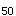
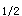

A.吸入给药
B.舌下给药
C.口服给药
D.直肠给药
E.皮下注射
参考答案：C
题目解析：首关消除指药物经口服在通过肠黏膜和肝脏时，因经过灭活代谢而失活，进入体循环的药量减少现象。由此可知口服给药是出现首关消除效应的主要给药途径。
A.比值越大就越不安全
B.ED/LD
C.ED/TD
D.LD/ED
E.比值越大，药物毒性越大
参考答案：D
题目解析：治疗指数(TI)通常指药物的半数致死量与半数有效量的比值，即LD/ED，用以表示药物的安全性。一般情况下，其值越大，药物毒性越小，安全性越大。
A.药物的半衰期不是恒定值
B.为一种少数药物的消除方式
C.单位时间内实际消除的药量随时间递增
D.其消除速度与初始血药浓度高低无关
E.为一种恒速消除动力学
题目解析：一级消除动力学又称恒比消除，指体内药物在单位时间内消除的药物百分率不变，即单位时间内消除的药物量与血浆浓度成正比，但单位时间内实际消除的药量随时间递减。多数药物以一级动力学消除，其消除半衰期相对恒定，与用药剂量或初始药物浓度无关。药物在体内经过5个半衰期(t)后，可基本消除干净。每隔一个t以给药一次，则体内药量可逐渐累积，经5个t 后，消除速度与给药速度相等，达到稳态。
A.药物经胃肠道进入门脉的分量
B.药物能吸收进入体循环的分量
C.药物吸收后达到作用点的分量
D.药物吸收后进入体内的相对速度
E.药物吸收进入体循环的相对分量和速度
参考答案：E
A.给药次数
B.给药时间
C.给药剂量
D.给药途径
E.年龄
A.活性低
B.效能低
C.首过消除显著
D.排泄快
E.首过消除不显著，排泄慢
A.舌下给药
B.吸入给药
C.静脉给药
D.皮下给药
E.口服给药
A.药物的脂溶性
B.药物的解离度
C.体液的pH值
D.胎盘屏障
E.血脑屏障
A.与血浆蛋白结合率高
B.相对分子质量大
C.极性大
D.脂溶度高
E.脂溶性低
A.半衰期
B.清除率
C.消除速率常数
D.零级动力学消除
E.一级动力学消除
微信关注